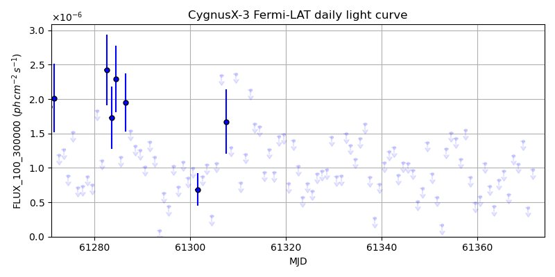
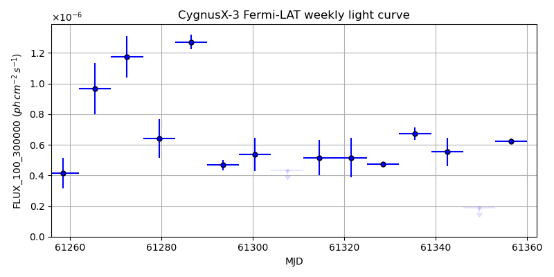

LAT Lightcurve site: https://fermi.gsfc.nasa.gov/ssc/data/access/lat/msl_lc/source/Cygnus_X-3
NED: Query
Time of last update of this page: UT: 2026-11-28 16:27 (MJD: 61372.686)
| Property | Value |
|---|---|
| R.A. | 20:32:25.68 |
| Dec. | 40:57:28.8 |
| z | 0.000 |
| 3FGL SpectrumType | |
| 3FGL PL Index | -1.00 |
| 3FGL Flux_100_300000 | -1.00e+00 |
| 3FGL Flux_1000_300000 | -1.00e+00 |
| 3FGL Flux >200 GeV | -1.00e+00 |
| 3FGL Extrap. Crab >200 GeV | -1.00 |
| 3FGL Flux After EBL Absorption >200GeV | -1.00e+00 |
| 3FGL EBL Crab Fraction >200GeV | -1.00 |

| MJD | dMJD | Flux | dFlux | Frac3FGL | FracCrab>200GeV | EBLFracCrab>200GeV |
|---|---|---|---|---|---|---|
| 61367.50 | 0.50 | 1.18e-06 | 0.00e+00 | 0.00 | 0.00 | -0.00 |
| 61368.50 | 0.50 | 1.06e-06 | 0.00e+00 | 0.00 | 0.00 | -0.00 |
| 61369.50 | 0.50 | 1.39e-06 | 0.00e+00 | 0.00 | 0.00 | -0.00 |
| 61370.50 | 0.50 | 4.23e-07 | 0.00e+00 | 0.00 | 0.00 | -0.00 |
| 61371.50 | 0.50 | 9.69e-07 | 0.00e+00 | 0.00 | 0.00 | -0.00 |

| MJD | dMJD | Flux | dFlux | Frac3FGL | FracCrab>200GeV | EBLFracCrab>200GeV |
|---|---|---|---|---|---|---|
| 61335.50 | 3.50 | 6.71e-07 | 0.00e+00 | 0.00 | 0.00 | -0.00 |
| 61342.50 | 3.50 | 5.53e-07 | 0.00e+00 | 0.00 | 0.00 | -0.00 |
| 61349.50 | 3.50 | 1.91e-07 | 0.00e+00 | 0.00 | 0.00 | -0.00 |
| 61356.50 | 3.50 | 6.24e-07 | 0.00e+00 | 0.00 | 0.00 | -0.00 |
| 61363.50 | 3.50 | 4.69e-07 | 0.00e+00 | 0.00 | 0.00 | -0.00 |
| MJD | dMJD | Flux | dFlux | Frac3FGL | FracCrab>200GeV | EBLFracCrab>200GeV |
|---|---|---|---|---|---|---|
| 61367.50 | 0.50 | 8.17e-08 | 0.00e+00 | 0.00 | 0.00 | -0.00 |
| 61368.50 | 0.50 | 2.98e-08 | 0.00e+00 | 0.00 | 0.00 | -0.00 |
| 61369.50 | 0.50 | 4.17e-08 | 0.00e+00 | 0.00 | 0.00 | -0.00 |
| 61370.50 | 0.50 | 1.70e-08 | 0.00e+00 | 0.00 | 0.00 | -0.00 |
| 61371.50 | 0.50 | 3.75e-08 | 0.00e+00 | 0.00 | 0.00 | -0.00 |

| MJD | dMJD | Flux | dFlux | Frac3FGL | FracCrab>200GeV | EBLFracCrab>200GeV |
|---|---|---|---|---|---|---|
| 61335.50 | 3.50 | 1.31e-08 | 0.00e+00 | 0.00 | 0.00 | -0.00 |
| 61342.50 | 3.50 | 3.01e-08 | 0.00e+00 | 0.00 | 0.00 | -0.00 |
| 61349.50 | 3.50 | 2.30e-08 | 0.00e+00 | 0.00 | 0.00 | -0.00 |
| 61356.50 | 3.50 | 2.95e-08 | 0.00e+00 | 0.00 | 0.00 | -0.00 |
| 61363.50 | 3.50 | 2.90e-08 | 0.00e+00 | 0.00 | 0.00 | -0.00 |
--------------------------------------------------------- Using user-supplied coords: 20:32:25.68 40:57:28.8 2000 --------------------------------------------------------- FLWO UT night of: 2026-11-29 Local Sid. @ Midnight: 04:08 Sunset (-15.0) (local, UT): 18:31 01:31 Sunrise (-15.0) (local, UT): 05:53 12:53 Moonrise (local, UT): 21:57 04:57 Moonset (local, UT): Moon phase: 0.72 --------------------------------------------------------- AzTime LSID UT Obj_el Obj_az Mn_el Mn_az Sep. --------------------------------------------------------- 18:31 22:39 01:31 63.2 299.3 -32.9 32.1 120.2 19:01 23:09 02:01 57.5 297.9 -29.4 38.9 120.2 19:31 23:39 02:31 51.9 297.6 -25.4 45.0 120.3 20:01 00:09 03:01 46.2 298.1 -21.0 50.6 120.4 20:31 00:39 03:31 40.6 299.2 -16.2 55.6 120.4 21:01 01:09 04:01 35.1 300.7 -11.1 60.2 120.5 21:31 01:39 04:31 29.6 302.5 -5.4 64.5 120.5 22:01 02:09 05:01 24.3 304.6 0.4 68.5 120.5 22:31 02:39 05:31 19.1 307.1 5.8 72.2 120.6 23:01 03:10 06:01 14.1 309.9 11.6 75.8 120.6 23:31 03:40 06:31 9.3 313.0 17.5 79.4 120.7 00:01 04:10 07:01 4.9 316.4 23.6 82.9 120.7 00:31 04:40 07:31 0.8 320.1 29.7 86.5 120.8 01:01 05:10 08:01 -2.2 324.2 35.8 90.3 120.8 01:31 05:40 08:31 -7.0 328.6 42.0 94.4 120.9 02:01 06:10 09:01 -10.2 333.4 48.1 99.1 121.0 02:31 06:40 09:31 -12.8 338.6 54.2 104.7 121.0 03:01 07:10 10:01 -14.8 344.0 60.1 111.7 121.1 03:31 07:40 10:31 -16.3 349.7 65.6 121.1 121.2 04:01 08:10 11:01 -17.1 355.6 70.5 134.7 121.2 04:31 08:40 11:31 -17.3 1.5 74.0 154.7 121.3 05:01 09:11 12:01 -16.8 7.4 75.2 181.1 121.4 05:31 09:41 12:31 -15.6 13.2 73.6 206.8 121.5 05:53 10:02 12:53 -14.4 17.2 71.0 221.2 121.6 --------------------------------------------------------- Dark hours >55 deg.: 0.72 srcstart (UT): 2026-11-29 01:31 srcend (UT): 2026-11-29 02:14